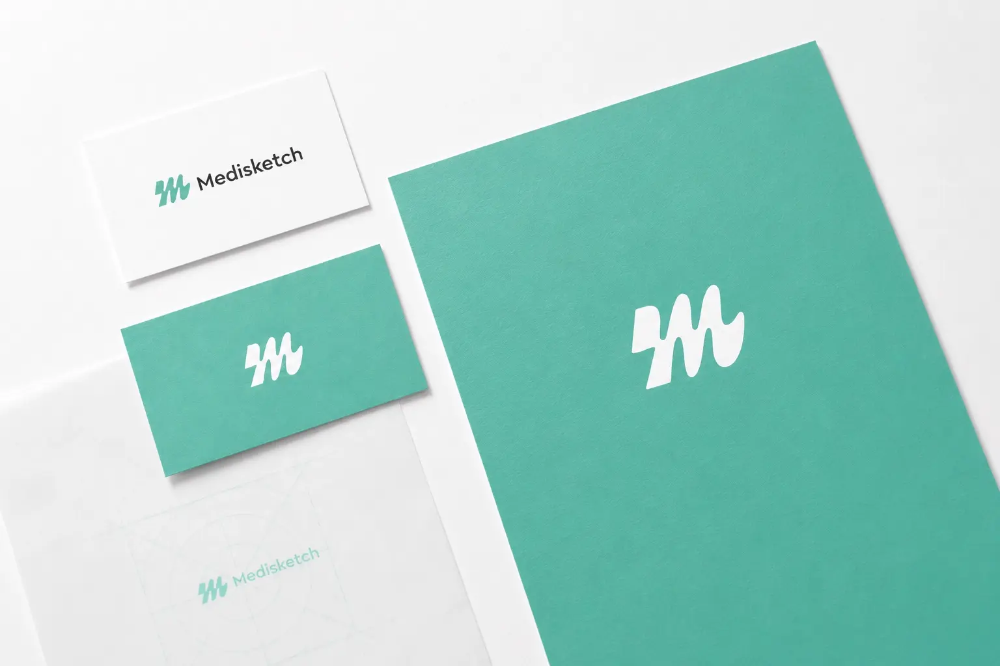
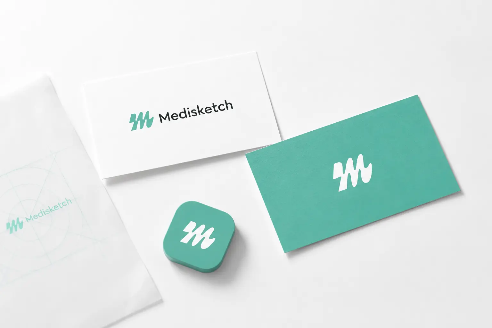
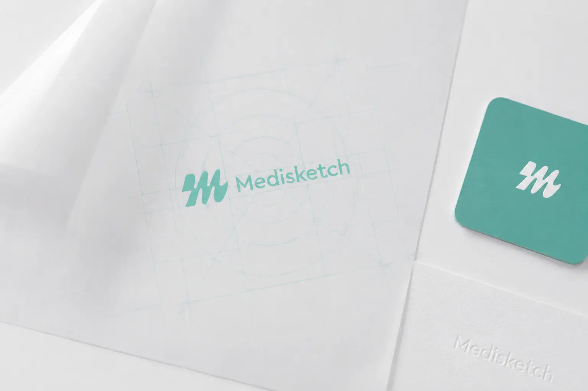
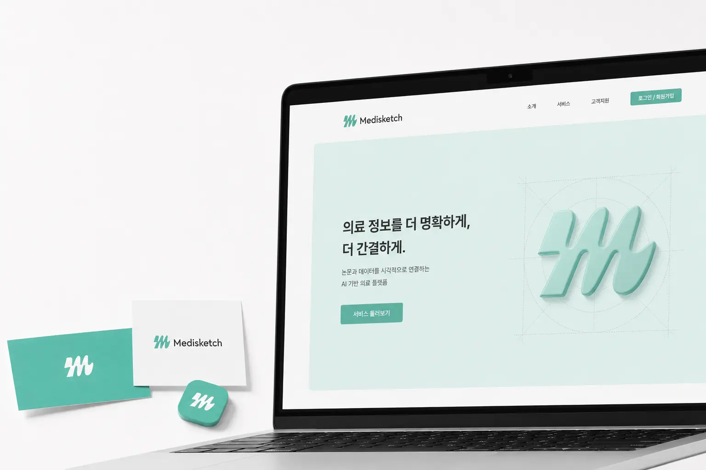
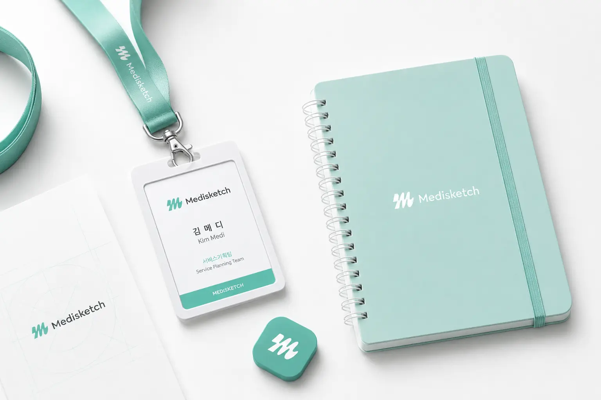
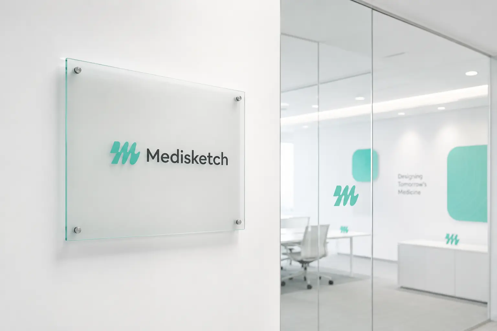
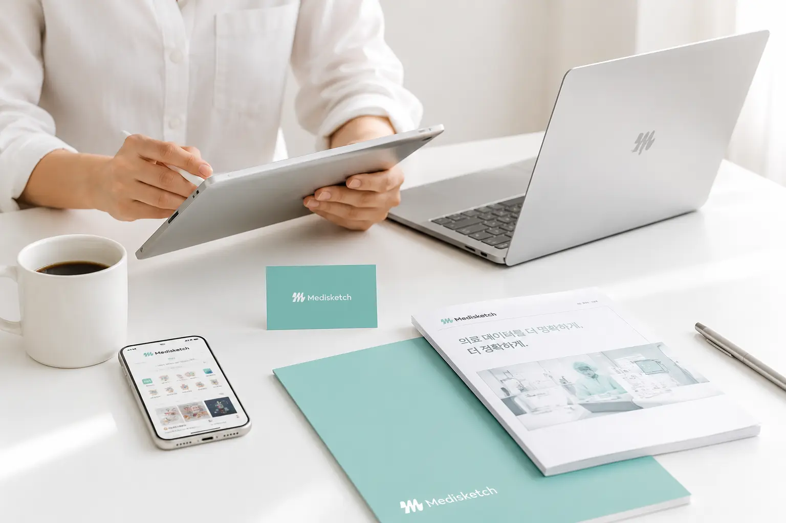

Medisketch의 목표는 어렵고 복잡한 의료 데이터를 더 쉽고 명확하게 시각화하는 것이다. 사용자는 논문, 제품 소개, 교육 자료, 의료 콘텐츠 등에 필요한 메디컬 일러스트를 한 곳에서 탐색하고 활용할 수 있다. 서비스 화면에서는 카테고리 아이콘, 검색창, 추천 콘텐츠, HOT 서비스 영역을 통해 사용자가 필요한 자료를 빠르게 찾을 수 있도록 구성되어 있다. 브랜드 전반에서는 의료 서비스로서의 신뢰감과 디지털 플랫폼으로서의 편의성을 함께 전달한다. 최종적으로는 Medisketch를 의료 정보 시각화가 필요한 전문가와 기업이 신뢰하고 사용할 수 있는 대표적인 메디컬 일러스트 플랫폼으로 자리 잡게 하는 것을 목표로 한다.
Portfolio / Brand Identity
Medisketch
Medisketch는 논문, 제품 상세페이지, 의료 콘텐츠 제작에 필요한 메디컬 일러스트를 쉽고 정확하게 제공하는 AI 기반 의료 시각화 플랫폼이다. 브랜드는 복잡한 의료 정보를 더 명확하게 정리하고, 전문적인 데이터를 누구나 이해하기 쉬운 이미지로 전환하는 것을 목표로 한다. 전체적인 무드는 민트 컬러와 화이트 배경을 중심으로 깨끗하고 신뢰감 있게 구성되어 있다. 로고, 앱 화면, 웹사이트, 명함, 사원증, 문서, 오피스 사인 등 다양한 접점에서 동일한 시각 언어를 유지해 전문 플랫폼 브랜드의 이미지를 만든다. Medisketch는 의료 정보의 정확성과 디자인의 직관성을 함께 갖춘 메디컬 비주얼 솔루션 브랜드로 설계되었다.
- Scope
- Brand Identity / Medical
- Studio
- BDLab
- Year
- 2026

Medisketch의 핵심 메시지는 “의료 정보를 더 명확하게, 더 간결하게”라는 방향으로 정리할 수 있다. 이는 전문적인 의료 데이터를 복잡하게 전달하는 것이 아니라, 시각적 구조를 통해 더 쉽고 정확하게 이해시키겠다는 의미를 담고 있다. “논문이나 제품 상세페이지에 필요한 메디컬 일러스트를 한 곳에서”라는 서비스 문구는 플랫폼의 기능과 사용 목적을 직접적으로 보여준다. 브랜드 메시지는 의료 전문성과 사용 편의성을 동시에 강조하며, 복잡한 의료 콘텐츠 제작 과정을 효율적으로 줄여주는 이미지를 만든다. 전체적으로 Medisketch는 정확한 의료 시각화, 간편한 자료 탐색, 신뢰할 수 있는 콘텐츠 제작 지원을 중심으로 브랜드 방향성을 전개한다.
Medisketch의 디자인은 민트 컬러와 화이트 배경을 중심으로 깨끗하고 전문적인 이미지를 형성한다. 전체적인 레이아웃은 넓은 여백, 부드러운 라운드 박스, 간결한 아이콘, 정돈된 타이포그래피를 활용해 의료 플랫폼 특유의 신뢰감을 전달한다. 앱 화면에서는 의료기기, 3D 모델, 도식화, 해부학 요소 등 다양한 카테고리를 아이콘 형태로 정리해 사용자가 직관적으로 탐색할 수 있도록 구성했다. 웹 화면에서는 큰 메시지와 3D 심볼 그래픽을 함께 배치해 플랫폼의 기술성과 브랜드 이미지를 동시에 보여준다. 디자인 전반은 차갑고 어려운 의료 정보를 부드럽고 접근성 있게 바꾸는 데 초점을 둔 것이 특징이다.





